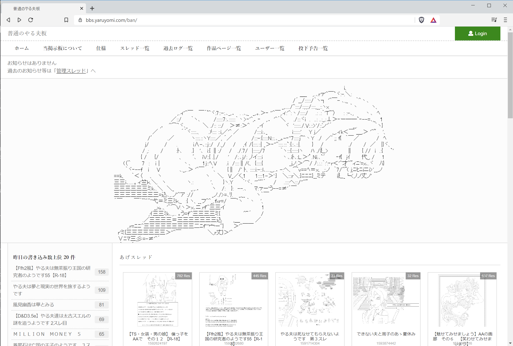
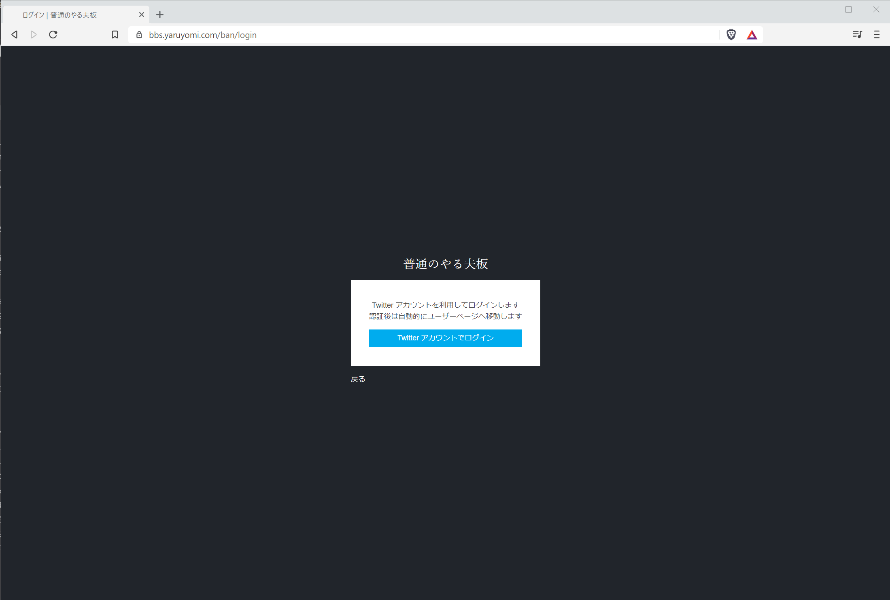

2. ユーザーページへのログイン方法¶
2.1. サイトを表示¶
サイトへアクセスし、画面右上にある「Login」ボタンを押下します。
2.2. ログイン¶
ログイン画面が表示されます。
「Twitterアカウントでログイン」ボタンを押下します。
※
掲示板ではTwitterアカウントを利用してのログインのみ対応しています。
Twitterアカウントをお持ちでない方は予め作成をお願いいたします。
2.3. Twitter の認証¶

Twitterの画面へ遷移し、ユーザーページを利用したいTwitterアカウントでログインしていることを確認して下さい。問題なければ「連携アプリを認証」ボタンを押下します。